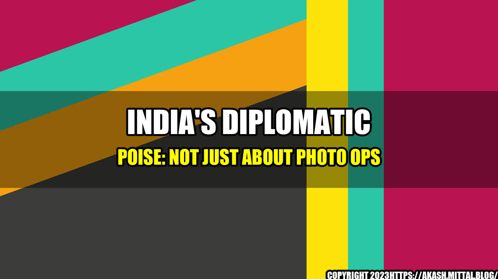

India's Diplomatic Poise: Not Just about Photo Ops

India, the world's largest democracy, is on the rise. In recent years, the country has made significant strides in many areas, including economics, technology, and military power. But what about diplomacy? Can India claim to have a strong presence on the world stage, and if so, how has it achieved this?
Achievements
One key achievement of India's diplomacy is its ability to maintain strong relationships with important global players. For example, India has built close ties with Japan, the United States, and Australia. These alliances have helped India to strengthen its economic, military, and technological capabilities, and have enhanced its strategic positioning in the Asia-Pacific region. Additionally, India has cultivated a strong diplomatic relationship with Russia, which has proven to be a valuable partner in the defense sector.
Another notable achievement is India's successful leadership of the International Solar Alliance (ISA). Established in 2015, the ISA is a coalition of countries that are committed to promoting the use of solar energy. India launched the initiative with France, and has since worked to build a network of over 120 member countries. This has not only helped to combat climate change, but has also boosted India's reputation as a leader in sustainable development.
India has also shown diplomatic poise in its handling of regional conflicts. For example, India has been able to maintain stable relations with China, despite ongoing disputes over territory and trade. This has been achieved through regular discussions and diplomatic channels, as well as building a robust trade relationship with China. Similarly, India's relationship with Pakistan has been tense for decades, but the country has been able to avoid a major conflict, and has instead focused on building economic ties through cross-border trade.
Challenges
Despite its diplomatic achievements, India still faces several challenges on the world stage. One major issue is the ongoing tension with neighboring Pakistan. While India has been successful in avoiding major conflict, the situation remains volatile, and could escalate at any moment. Additionally, India's relationship with China remains fragile, and could be impacted by future territorial disputes or economic conflicts.
Another challenge is India's positioning in the Middle East. While the country has historically maintained close ties with countries in the region, recent political developments have complicated these relationships. For example, India's traditionally warm relationship with Iran has been tested by sanctions imposed by the United States. Similarly, India's commercial ties with Saudi Arabia have been impacted by the fallout from the killing of journalist Jamal Khashoggi.
Finally, India faces challenges in promoting its values on the world stage. While the country has a strong record in democracy and human rights, its stance on issues such as LGBTQ rights and religious freedom have been criticized by the international community. India must work to address these concerns, while also promoting its successes in areas such as gender equality and economic development.
Conclusion
In conclusion, India's diplomatic poise is not just about photo ops. The country has made significant achievements in maintaining strong relationships with global players, leading important initiatives such as the ISA, and managing regional conflicts with skill and nuance. However, India also faces major challenges, including volatile relationships with Pakistan and China, and difficulties in promoting its values on the world stage. To continue to rise on the world stage, India must tackle these challenges head on, while also building on its successes.
References:
Category:
- International Relations
- Diplomacy
- Politics
Curated by Team Akash.Mittal.Blog
Share on Twitter Share on LinkedIn